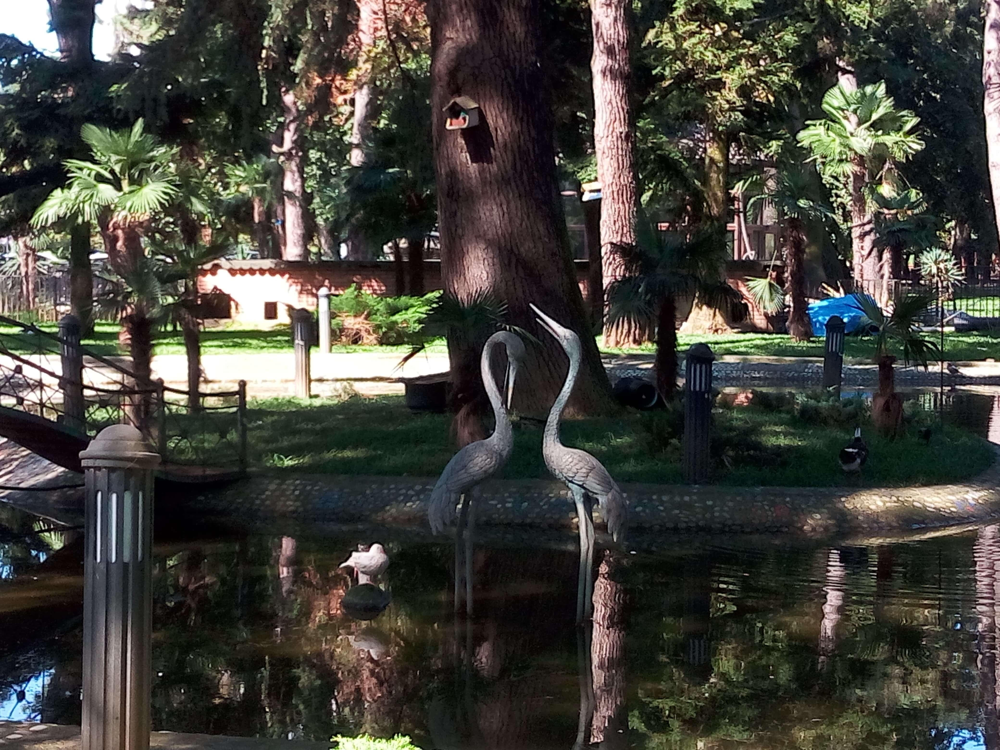

Birds Zoo
Batumi · Georgia
Birds Zoo in Batumi offers visitors an opportunity to observe different bird species in a pleasant outdoor setting. Located within the city's green surroundings, it provides a quieter experience away from the busy streets and seaside promenade. The colorful birds and natural environment make it an interesting stop for visitors who enjoy wildlife and photography. These photographs capture my personal memories of Birds Zoo and the moments I experienced there. It is a small attraction that offers a different perspective on Batumi's natural side. The visit also provides an opportunity to appreciate the variety of birdlife in a relaxed setting.
My Photo Gallery
Explore my personal photographs and memories of Birds Zoo.
View All Photos ↗